Interactive world models continually generate video by responding to a user's actions, enabling open-ended generation capabilities.
However, existing models typically lack a 3D representation of the environment, meaning 3D consistency must be implicitly learned from data, and spatial memory is restricted to limited temporal context windows. This results in an unrealistic user experience and presents significant obstacles to down-stream tasks such as training agents.
We present PERSIST, a new paradigm of world model which simulates the evolution of a latent 3D scene: environment, camera, and renderer. This allows us to synthesize new frames with persistent spatial memory and consistent geometry.
Our approach achieves substantial improvements in spatial memory, 3D consistency, and long-horizon video generation quality over existing methods, producing coherent and evolving 3D worlds.
Within 3D environments, pixel observations provide partial, highly redundant, and viewpoint-dependent snapshots of the world. Could we instead model the environment directly in 3D, using a representation that evolves over time?
Pixel-based memory is expensive, limiting existing world models to a few seconds of visual memory. By maintaining a persistent 3D state, PERSIST enables efficient storage and retrieval of spatial information over extended horizons.
Initial View
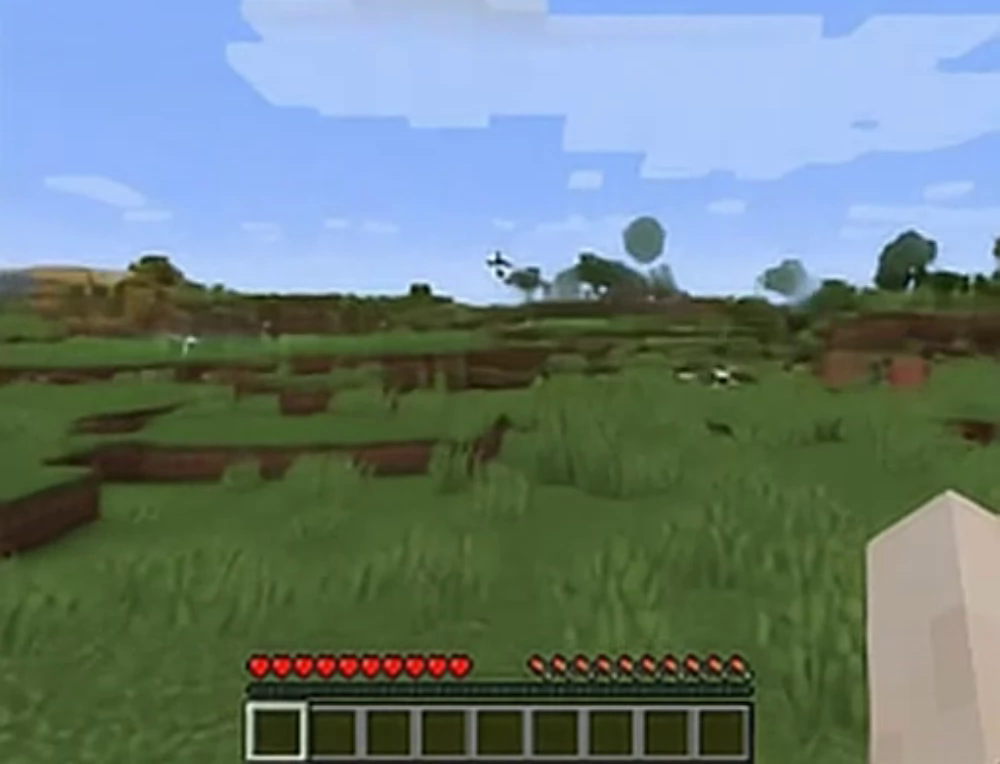
Revisit View
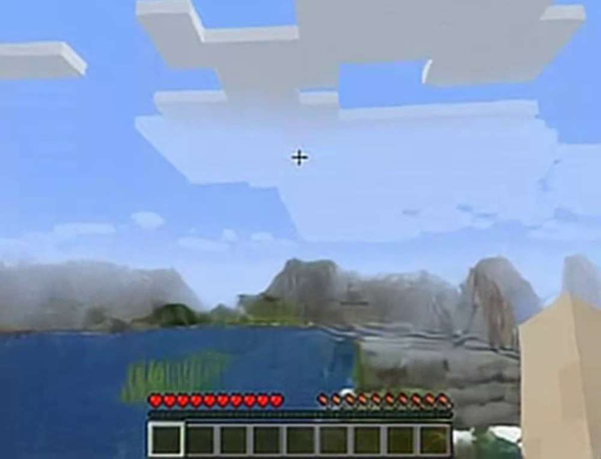
Initial View
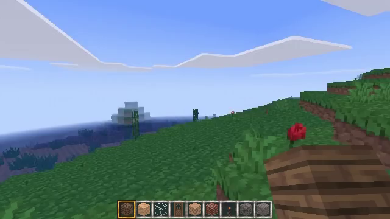
Revisit View
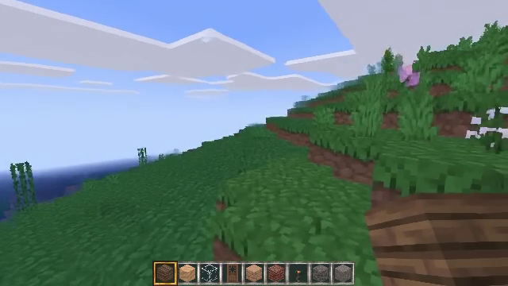
By providing a partial view of the environment, pixel-based histories make modelling certain environment dynamics inherently challenging. For example, modelling collisions with out-of-view objects become a stochastic process.
We find that existing models tend to heavily prioritise the dominant mode of not modelling any object or elevation change behind the player as they move backwards.
In contrast, our 3D representation tracks space all around the player, allowing PERSIST to model a broader class of agent-environment interactions.
Key-frame retrieval methods construct their context by selecting frames from the full generation history, choosing those that appear most spatially and temporally relevant.
However, retrieval fundamentally relies on past observations as a proxy for spatial memory. As the agent explores new regions or revisits scenes from novel viewpoints, suitable frames may not exist in memory, causing an immediate degradation in visual quality and spatial consistency.
PERSIST takes a fundamentally different approach. Rather than retrieving spatial information from past frames, it maintains a 3D representation that is actively regenerated at each timestep. As the agent moves, this representation evolves to reflect the current state of the world, enabling consistent spatial reasoning without relying on an ever-growing archive of past observations.
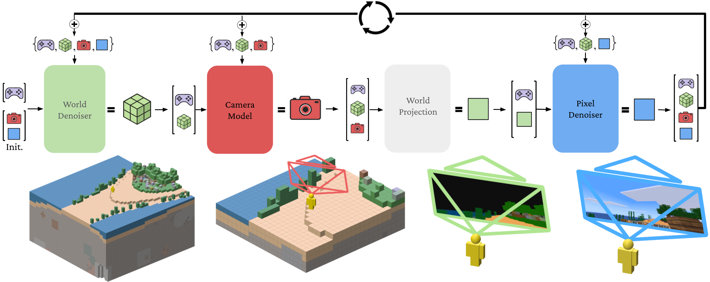
Initialized with a single pixel frame, PERSIST evolves in a four-part auto-regressive loop in response to user actions . We first denoise the 3D environment centred on the agent in the form of a latent world-frame . Next, camera parameters are predicted with a feed-forward transformer. We then project the world to the camera plane to form a depth-ordered stack of world latents
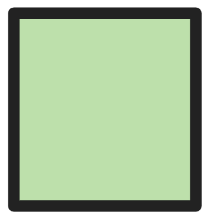
. Finally, pixel latents are diffused, conditioned on pixel-aligned 3D information from the world frame.In addition to its improvement to the quality and coherence of generated experiences, we find that PERSIST's 3D representation confers a number of new capabilities.
As a generative approach, our world-frame flow matching model can produce diverse plausible world states from a single RGB observation at initialisation. Below, we visualise the iterative denoising of the world frame over 20 denoising steps. Each row corresponds to a specific input RGB frame, while each column shows a distinct sample generated using a different random seed.
Despite starting from the same image, the model produces a range of distinct yet consistent world completions. These samples preserve the structure and semantics of the original view while filling in unseen regions in different plausible ways. This ability allows PERSIST to generate diverse and coherent environments, supporting a wide variety of interactive experiences.
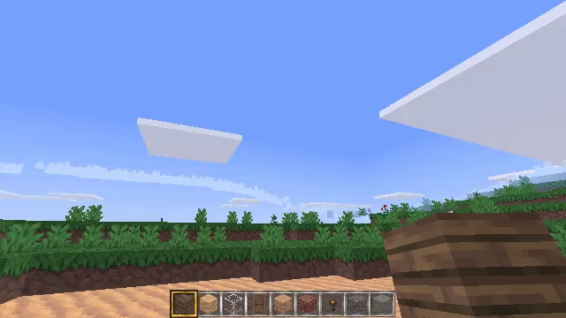
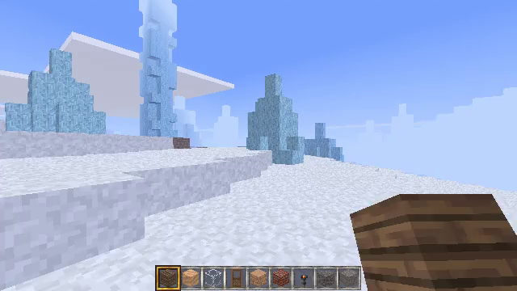
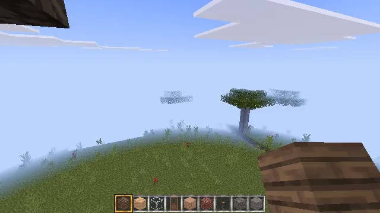
Alternatively, we can leverage direct access to an explicit 3D representation to directly provide the model with 3D data. This explicit 3D conditioning allows a greater degree of control over the generated experience than providing an image, as the full surroundings of the agent can be specified. Here we show how closely PERSIST follows ground truth rollouts when it receives a ground truth world frame at initialisation.
Our explicit 3D representation allows us to directly edit the world state mid-generation, enabling a new form of dynamic world editing that occurs directly in 3D space. We provide some examples below.
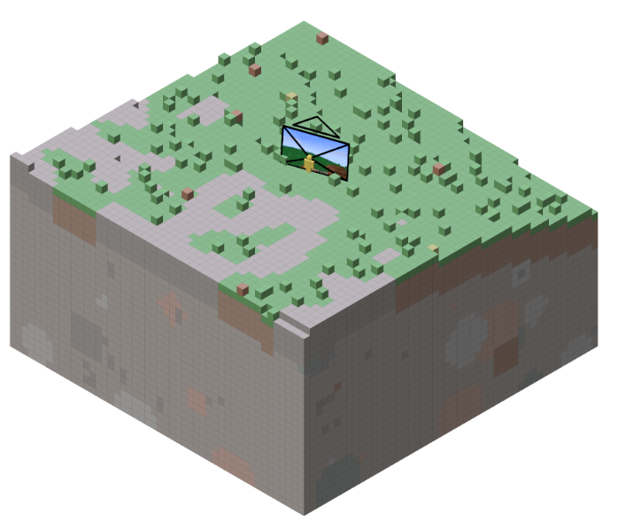
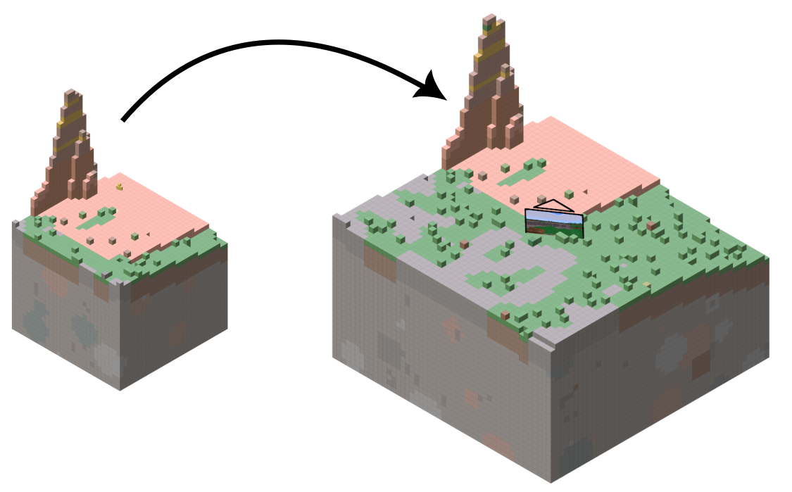
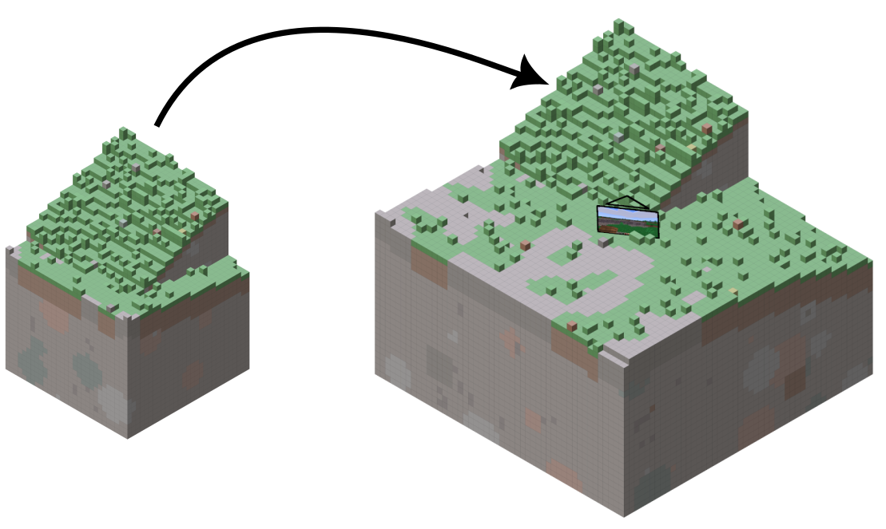
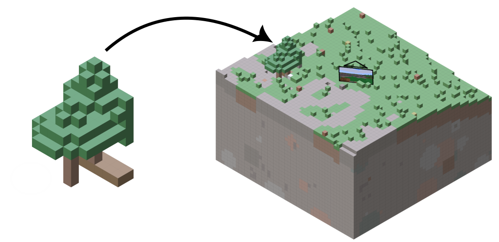
Similarly to other autogressive models, PERSIST experiences visual artifacts induced by auto-regressive drift. However, we find that our 3D representation is inherently more stable and resistant to drift. As such, visual artifacts tend to recede when the model retrieves information from its 3D representation (e.g. when rotating the camera), making it possible to maintain stability over extended horizons.
PERSIST continuously models dynamic processes in the environment, even while they are not being actively rendered to screen space. Here, we show a waterfall that is gradually flooding the area, causing water to eventually appear in the player's view.
@article{todo,
author = {todo},
title = {todo},
journal = {todo},
year = {2026},
}